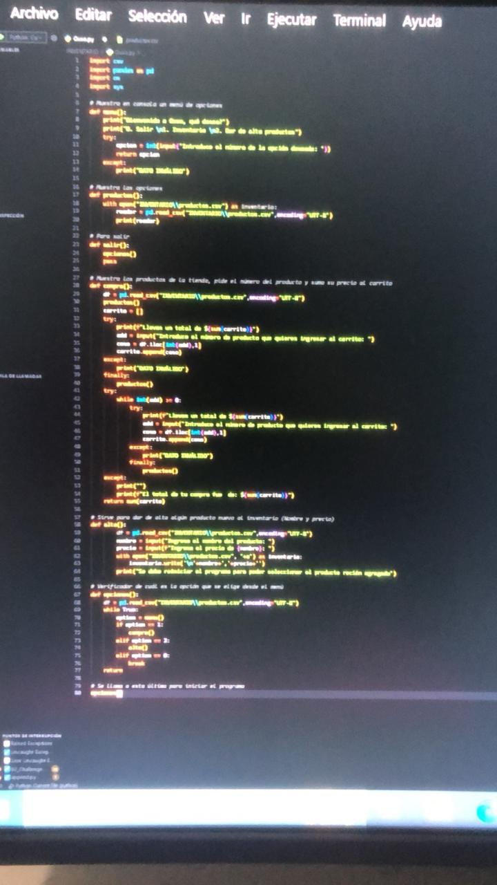
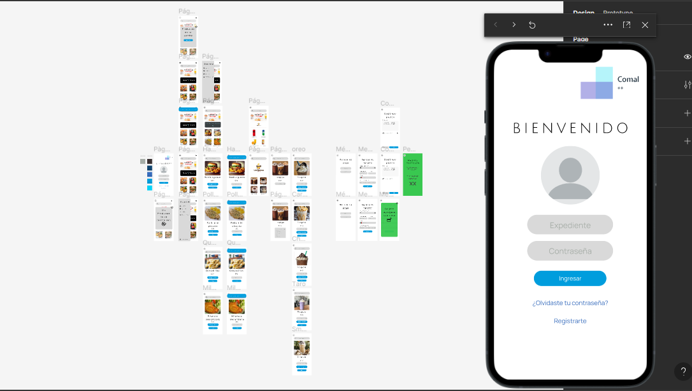

Tengo 18 años y soy originario de Celaya, Gto. Ahora mismo asisto a la Universidad Autónoma de Querétaro como foráneo. Me encuentro estudiando la carrera de Ingeniería de Software y actualmente estoy cursando segundo semestre.
Dentro de mis logros académicos puedo resaltar el primer lugar en una competencia del tecnológico que Celaya, la cual se basaba en las ciencias básicas: Matemáticas, Física y Química. Esto ocurrió hace año y medio, en Noviembre de 2022 y concursaron distintas escuelas de localidades cercanas a Celaya
En cuanto a conocimientos técnicos, tengo uin gran manejo de las tecnologías, un conocimiento limitado (por el momento) de distintos lenguajes de programación como Python, C++ y Java, habiendo profundizado en la progrmación orientada a objetos en este último. Además, tengo conocimientos básicos en HTML y CSS, mismos que usé para la realización de esta página / portafolio.
Dentro de los idiomas que domino, de momento solo están el español y el ingles, este último lo llevo aprendiendo casi toda mi vida.
No tengo mucha experiencia como líder a decir verdad, aunque las veces que lo he sido he sabido sacar adelante al equipo con el que he trabajado. Además, estoy dispuesto a asumir las responsabilidades y realizar extra en caso de que los integrantes no cumplan con el trabajo asignado.
En cuanto a ser integrante de un equipo, pienso que tengo un excelente desempeño haciendo mi parte, entrego con el tiempo suficiente para poder hacer cambios de ser necesario.
Este protafolio es realmente mi primer proyecto hecho con HTML y CSS. Fue parte del taller de desarrollo Web al que estuve asistiendo durante el segundo semestre de la carrera.
Como parte de un esfuerzo por seguir aprendiendo en python, desarrollé un código que me permitiera guardar productos con todas las características necesarias para formar parte del inventario de una tienda. Guardando los mismos en un archivo aparte, además de la capacidad de acceder y editar cualquiera de estos mediante un código especial para cada uno.
Una de las materias que he estado cursando en segundo semestre de universidad requería el desarrollo de un diseño para una app que cumpliera alguna necesidad que se presentara dentro de la misma universiad, así que opté por idear una aplicación para el pre-ordenado de comida en la cafetería de la escuela, Comal ++. Hice el diseño en figma y añadí todas las funciones que pretendía que tuviera para que puediera mostrar el funcionamiento de la aplicación.
